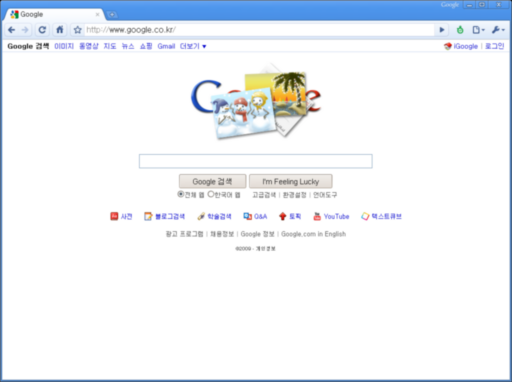

어설퍼진 Google 첫 페이지
Google의 첫 페이지는 단순하고 깔끔한 것으로 유명하다. Google을 좋아하는 것은 당연히 검색을 잘 해주기 때문이지만, Google을 좋아하는 사람이라면 단순하고 깔끔한 첫 페이지도 좋아할 것이다. 그런데 얼마 전 Google의 첫 페이지가 바뀌었다. 예전부터 한국 상황에 맞게 첫 페이지를 변경한다던 뉴스를 들어왔던지라 어떻게든 바뀔 것을 예상은 하고 있었지만 막상 바뀐 모습을 보니 실망스러울 뿐이었다.
국내 포탈 사이트를 모방(?)한 듯 검색창 아래 쓸데없는(?) 정보를 표시한다. 내가 네이버나 다음에 접속할 때는 보통 뉴스를 보기 위해서지만 Google에 접속할 때는 검색을 하기 위해서란 걸 Google 사람들은 모르는 것 같다. 새로 바뀐 Google의 첫 페이지는 Google도 아니고 포탈도 아닌 어정쩡한 모양이다. 혹시나 예전 모양으로 볼 수 있게 하는 옵션이나 설정 같은게 있을까 찾아봤지만 찾지 못했다.
그런데 특이한 점을 발견했다. Google이 만든 브라우저인 Chrome으로 Google에 접속하면 아래 그림과 같이 예전의 깔끔한 Google 화면이 나온다는 것이다.

이 부분에 대해 좀더 자세히 말하자면, Google의 첫 페이지가 바뀐 날 FireFox나 IE로 들어갔을 때는 첫 페이지가 바뀌어 있었지만 Chrome으로 들어갔을 때는 예전 모양이 나왔었다. 그래서 Google 사람들이 센스가 있구나 생각을 했었는데… 그 다음날부터는 한동안 Chrome으로 접속해도 다른 브라우저로 접속했을 때와 마찬가지로 이도저도 아닌 썰렁한 페이지가 나왔다.
그런데, 오늘은 다시 깔끔한 페이지로 돌아와있었다. Chrome 브라우저를 쓰는 사람이라면 새로 바뀐 이도저도 아닌 페이지보다는 예전의 깔끔한 페이지를 좋아할꺼란 사실을 Google이 알아차린 것일까?
혹시나 싶어 다른 브라우저로 Google에 접속해봤다. 인터넷 뱅킹 전용 브라우저인 IE야 당근 바뀐 모양으로 나왔고, Opera나 Safari 역시 마찬가지였다.
물론 Google도 사업적인 측면뿐 아니라 여러 가지 사항을 고려해 첫 페이지 모양을 바꿨겠지만, 개인적으로 봤을 때 바뀐 페이지는 한 마디로 “꽝”이다. 하루 빨리 예전의 단순하고 깔끔한, 한마디로 Google스런 첫 페이지 모양으로 돌아갔으면 하는 바램이다.
한가지 다행스러운 점은, Google 첫 페이지를 보는 일은 그리 많지 않다는 점이다. IE나 Opera, Safari는 거의 사용하지 않으며, FireFox나 Chrome을 사용할 때도 브라우저의 검색창에 키워드를 입력해 검색하기 때문이다.